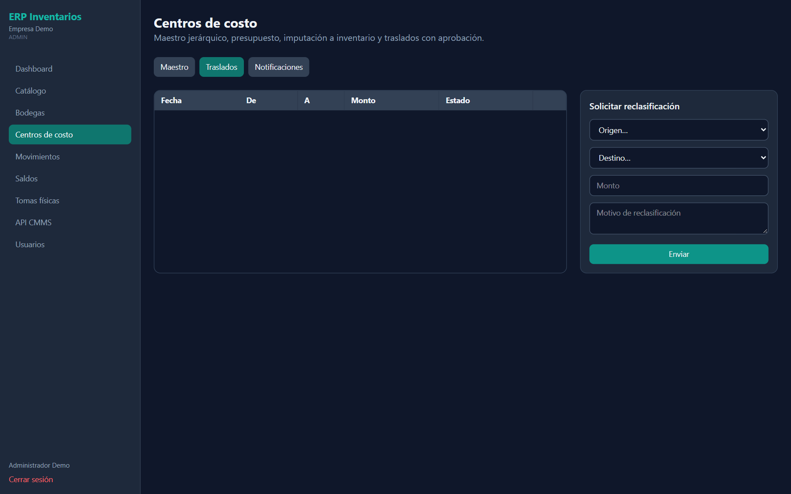
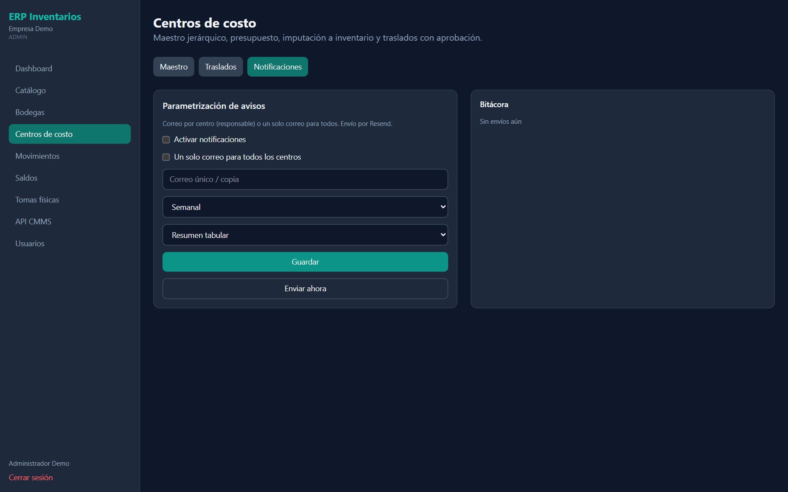

Portal
Centros de costo
Maestro jerárquico, presupuesto, imputación a inventario y traslados con aprobación. Tres pestañas: Maestro, Traslados y Notificaciones.



Maestro · filtros, tabla y ficha
| Campo / control | Qué es | Cómo usarlo |
|---|---|---|
| Buscar código, nombre, responsable… | Búsqueda libre. | También busca por departamento. |
| Todos los tipos | Filtro por tipo de centro. | — |
| Estructura | Árbol padre → hijos. | Toque un centro para ver su ficha. |
| Tabla | Código, Nombre, Tipo, Presupuesto, Movs., Estado. | Movs. = movimientos imputados. |
| Ficha | Depto., Resp., Correo, Cuenta y si requiere aprobación. | Desactivar / Reactivar el centro. |
Campos · Nuevo centro
| Campo / control | Qué es | Cómo usarlo |
|---|---|---|
| Código / NombreObligatorio | Identificación del centro (ej. CC-220 Mantenimiento). | — |
| Tipo | Operativo, Administrativo, Producción, Mantenimiento, Comercial, Proyecto, Logística, Inversión. | Clasificación funcional. |
| Naturaleza | Gasto, Inversión o Ingreso. | Tratamiento contable. |
| PadreOpcional | Centro superior. “Sin padre (nivel 1)” = raíz. | Arma la jerarquía. |
| Departamento / Responsable / Correo del responsableOpcional | Dueño del centro. | El correo recibe los avisos. |
| Cuenta contableOpcional | Cuenta del ERP contable. | Para conciliar. |
| Presupuesto anualOpcional | Monto en ₡. | Control de consumo. |
| Color / Requiere aprobación | Color en el árbol y si los traslados hacia él necesitan aprobación. | Sin aprobación, el traslado se aprueba solo. |
| Crear | Guarda el centro. | — |
Traslados
| Campo / control | Qué es | Cómo usarlo |
|---|---|---|
| Solicitar reclasificación | Origen…, Destino…, Monto, Motivo de reclasificación. | El motivo es obligatorio. Pulse Enviar. |
| Tabla | Fecha, De, A, Monto, Estado (PENDIENTE / APROBADO / RECHAZADO). | Las pendientes muestran Aprobar y Rechazar. |
Notificaciones
| Campo / control | Qué es | Cómo usarlo |
|---|---|---|
| Activar notificaciones | Habilita los correos de resumen. | Envío por Resend. |
| Un solo correo para todos los centros | Envía todo a una dirección. | Si no, cada responsable recibe lo suyo. |
| Correo único / copiaOpcional | Dirección de destino o copia. | — |
| Frecuencia | Diaria, Semanal, Quincenal o Mensual. | — |
| Formato | Resumen tabular o KPI / gráficos. | — |
| Guardar / Enviar ahora | Guarda la configuración o dispara un envío inmediato. | El resultado queda en la Bitácora. |